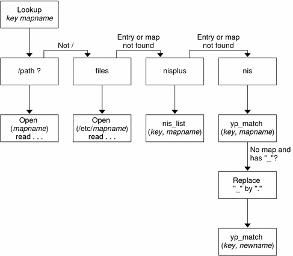

Previous
Previous
Maps That Refer to Other Maps
A map entry +mapname that is used in a file map causes automount to read the specified map as if it were included in the current file. If mapname is not preceded by a slash, autofs treats the map name as a string of characters and uses the name-service switch policy to find the map name. If the path name is an absolute path name, automount checks a local map of that name. If the map name starts with a dash (-), automount consults the appropriate built-in map, such as hosts.
This name-service switch file contains an entry for autofs that is labeled as automount, which contains the order in which the name services are searched. The following file is an example of a name-service switch file.
# # /etc/nsswitch.nis: # # An example file that could be copied over to /etc/nsswitch.conf; # it uses NIS (YP) in conjunction with files. # # "hosts:" and "services:" in this file are used only if the /etc/netconfig # file contains "switch.so" as a nametoaddr library for "inet" transports. # the following two lines obviate the "+" entry in /etc/passwd and /etc/group. passwd: files nis group: files nis # consult /etc "files" only if nis is down. hosts: nis [NOTFOUND=return] files networks: nis [NOTFOUND=return] files protocols: nis [NOTFOUND=return] files rpc: nis [NOTFOUND=return] files ethers: nis [NOTFOUND=return] files netmasks: nis [NOTFOUND=return] files bootparams: nis [NOTFOUND=return] files publickey: nis [NOTFOUND=return] files netgroup: nis automount: files nis aliases: files nis # for efficient getservbyname() avoid nis services: files nis
In this example, the local maps are searched before the NIS maps. Therefore, you can have a few entries in your local /etc/auto_home map for the most commonly accessed home directories. You can then use the switch to fall back to the NIS map for other entries.
bill cs.csc.edu:/export/home/bill bonny cs.csc.edu:/export/home/bonny
After consulting the included map, if no match is found, automount continues scanning the current map. Therefore, you can add more entries after a + entry.
bill cs.csc.edu:/export/home/bill bonny cs.csc.edu:/export/home/bonny +auto_home
The map that is included can be a local file or a built-in map. Remember, only local files can contain + entries.
+auto_home_finance # NIS+ map +auto_home_sales # NIS+ map +auto_home_engineering # NIS+ map +/etc/auto_mystuff # local map +auto_home # NIS+ map +-hosts # built-in hosts map
Note - You cannot use + entries in NIS+ or NIS maps.
Executable Autofs Maps
You can create an autofs map that executes some commands to generate the autofs mount points. You could benefit from using an executable autofs map if you need to be able to create the autofs structure from a database or a flat file. The disadvantage to using an executable map is that the map needs to be installed on each host. An executable map cannot be included in either the NIS or the NIS+ name service.
The executable map must have an entry in the auto_master file.
/execute auto_execute
Here is an example of an executable map:
#!/bin/ksh # # executable map for autofs # case $1 in src) echo '-nosuid,hard bee:/export1' ;; esac
For this example to work, the file must be installed as /etc/auto_execute and must have the executable bit set. Set permissions to 744. Under these circumstances, running the following command causes the /export1 file system from bee to be mounted:
% ls /execute/src
Modifying How Autofs Navigates the Network (Modifying Maps)
You can modify, delete, or add entries to maps to meet the needs of your environment. As applications and other file systems that users require change their location, the maps must reflect those changes. You can modify autofs maps at any time. Whether your modifications are effective the next time automountd mounts a file system depends on which map you modify and what kind of modification you make.
Default Autofs Behavior With Name Services
At boot time autofs is invoked by the service svc:/system/filesystem/autofs and autofs checks for the master auto_master map. Autofs is subject to the rules that are discussed subsequently.
Autofs uses the name service that is specified in the automount entry of the /etc/nsswitch.conf file. If NIS+ is specified, as opposed to local files or NIS, all map names are used as is. If NIS is selected and autofs cannot find a map that autofs needs, but finds a map name that contains one or more underscores, the underscores are changed to dots. This change allows the old NIS file names to work. Then autofs checks the map again, as shown in Figure 6-6.
Figure 6-6 How Autofs Uses the Name ServiceThe screen activity for this session would resemble the following example.
$ grep /home /etc/auto_master /home auto_home $ ypmatch brent auto_home Can't match key brent in map auto_home. Reason: no such map in server's domain. $ ypmatch brent auto.home diskus:/export/home/diskus1/&
If “files” is selected as the name service, all maps are assumed to be local files in the /etc directory. Autofs interprets a map name that begins with a slash (/) as local regardless of which name service autofs uses.
Autofs Reference
The remaining sections of this chapter describe more advanced autofs features and topics.
Autofs and Metacharacters
Autofs recognizes some characters as having a special meaning. Some characters are used for substitutions, and some characters are used to protect other characters from the autofs map parser.
Ampersand (&)
If you have a map with many subdirectories specified, as in the following, consider using string substitutions.
john willow:/home/john mary willow:/home/mary joe willow:/home/joe able pine:/export/able baker peach:/export/baker
You can use the ampersand character (&) to substitute the key wherever the key appears. If you use the ampersand, the previous map changes to the following:
john willow:/home/& mary willow:/home/& joe willow:/home/& able pine:/export/& baker peach:/export/&
You could also use key substitutions in a direct map, in situations such as the following:
/usr/man willow,cedar,poplar:/usr/man
You can also simplify the entry further as follows:
/usr/man willow,cedar,poplar:&
Notice that the ampersand substitution uses the whole key string. Therefore, if the key in a direct map starts with a / (as it should), the slash is included in the substitution. Consequently, for example, you could not do the following:
/progs &1,&2,&3:/export/src/progs
The reason is that autofs would interpret the example as the following:
/progs /progs1,/progs2,/progs3:/export/src/progs
Asterisk (*)
You can use the universal substitute character, the asterisk (*), to match any key. You could mount the /export file system from all hosts through this map entry.
* &:/export
Each ampersand is substituted by the value of any given key. Autofs interprets the asterisk as an end-of-file character.
Autofs and Special Characters
If you have a map entry that contains special characters, you might have to mount directories that have names that confuse the autofs map parser. The autofs parser is sensitive to names that contain colons, commas, and spaces, for example. These names should be enclosed in double-quotes, as in the following:
/vms -ro vmsserver: - - - "rc0:dk1 - " /mac -ro gator:/ - "Mr Disk - "Part IIISLP Topics
The section provides overview, planning, task and reference information for the Service Location Protocol (SLP) service.